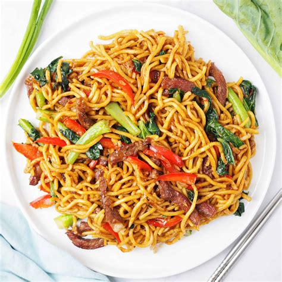

Beef Noodle Stirfry
Return to Home

So, what is this delicious stirfry?
Simply put, this is an oily fried dish with a few veggies and beef thrown into the wok. Follow along and I'll show you how to make it!
Ingredients
- Noodles of your choice
- Beef strips
- Capscium
- Green Beans
- Bean Sprouts
- Daikon
- Bok Choy
- Chilli
- Bay Leaf
- Sesame Seeds
- Sesame Oil
- Spices of your choosing
Steps
- Start by boiling the noodles of your choice
- Next, begin slicing the chillis and simmering them in the pan with sesame oil for 3 minutes over low to medium heat.
- While that simmers, cut the vegetables to your preferred proportion size
- Next, turn up the heat to medium and begin to brown the strips
- Once meat is browned slightly, add the cut up vegetables and season with whatever spices you prefer - I usually stick with some soy sauce, honey and some magi seasoning if I'm lazy.
- Turn heat up to high and continuously stir the vegetables adding in the noodles and more spices/sauces if the flavour is weak.
- Once the vegetables have been browned in sesame oil and the noodles have been cooked into the sauce, take off heat and serve with sesame seeds